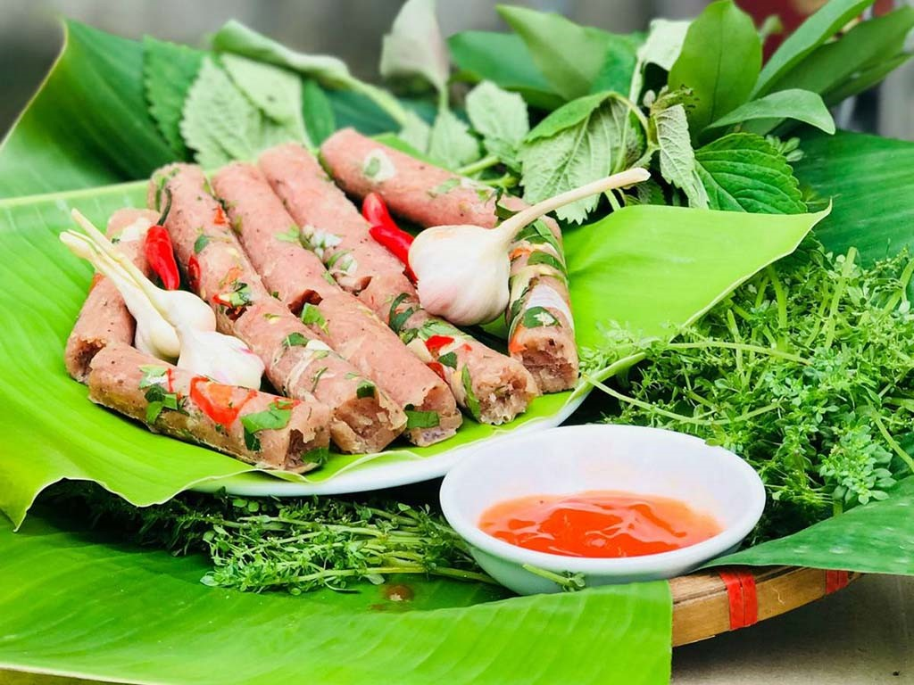
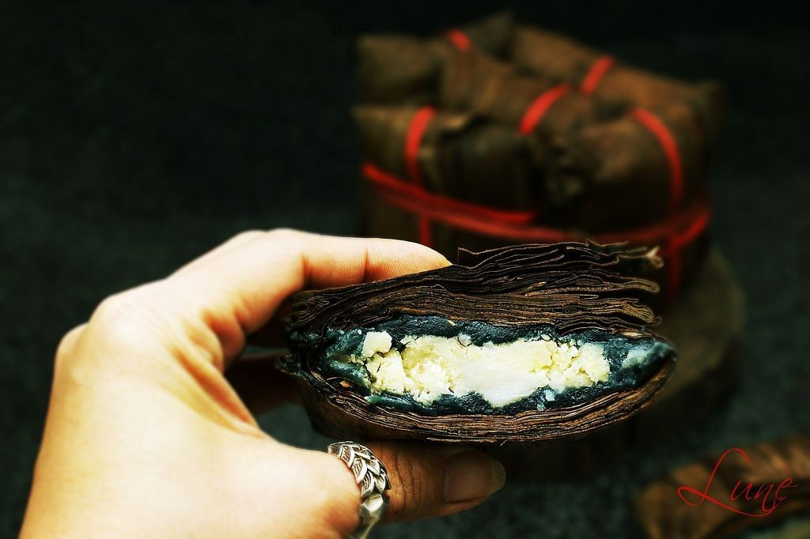
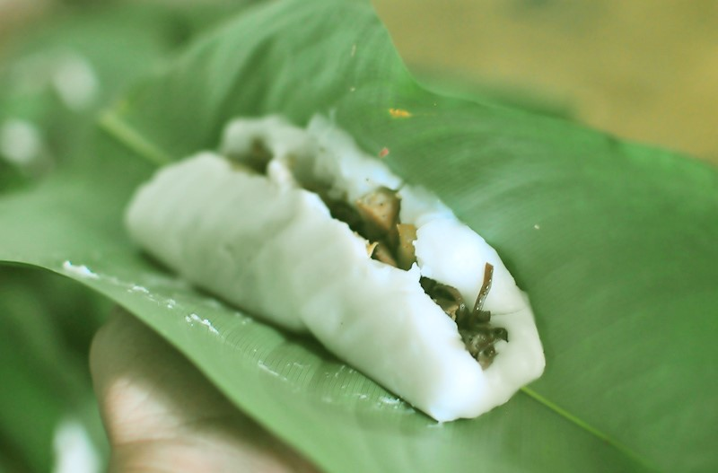
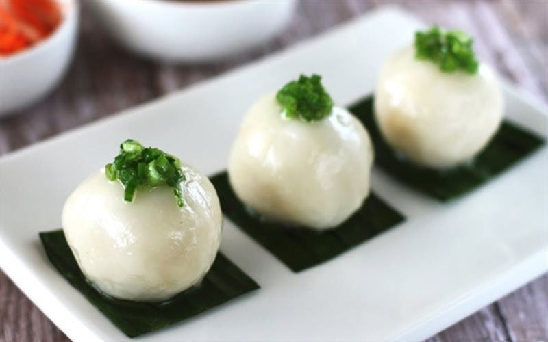
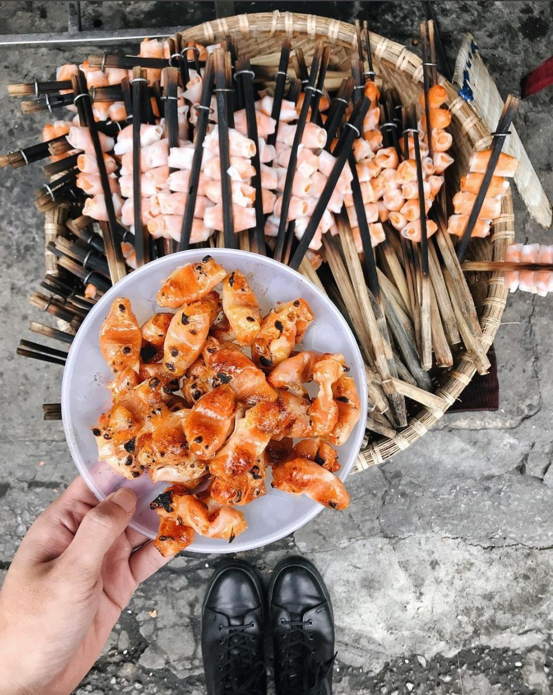
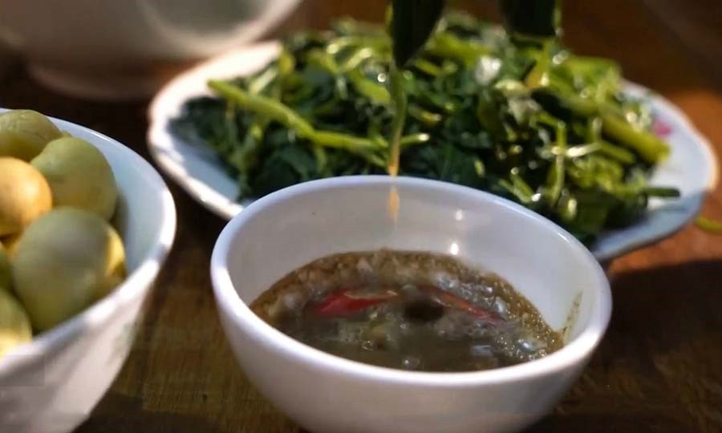

Nem chua là một món ăn khá quen thuộc với người dân Việt Nam. Không chỉ có thế, nó còn là món nhậu khoái khẩu của nhiều người. Và địa chỉ làm nên tên tuổi của món nem nổi tiếng này chính là Thanh Hóa.
Nem chua Thanh Hóa có nhiều loại, thông thường người ta sẽ dựa vào hình dáng và các làm để chia làm nem dài, nem vuông, nem cối hay nem thính… Nguyên liệu chính để làm nên món ăn dân dã này là thịt lợn mông nạc, lá đinh lăng, lá ổi, thính và các loại gia vị như tỏi, ớt…
Món nem được chế biến đơn giản, gói chắc tay. Hương vị nem giòn ngon hấp dẫn, khi ăn có vị chua vừa miệng cùng hương vị thơm ngon của tỏi, lá ổi, đinh lăng… Chúng sẽ tạo nên một điểm nhấn độc đáo trong vị giác khiến bạn phải say mê và ăn mãi không muốn ngừng.
Địa chỉ bán nem Thanh Hóa ngon:Vùng đất làng Mía Thanh Hóa đã tạo ra một thức quà quê mang hương vị đặc trưng hấp dẫn: bánh gai Tứ Trụ.
Đặc sản Thanh Hóa bánh gai Tứ Trụ ngon phải lựa chọn nguyên liệu hoàn hảo. Hạt nếp cái hoa vàng được xay mịn để làm bột bánh. Đậu xanh bỏ vỏ, đồ kỹ cho tơi ra mới đem đi xay nhuyễn. Một chiếc bánh có ngon hay không phụ thuộc khá nhiều vào lá gai. Ở làng Mía, người ta sẽ lựa chọn những chiếc lá không quá già, cũng không quá ngon để giã lấy nước trộn vào bột bánh. Phần còn lại để sử dụng gói bánh.
Bánh gai dẻo dẻo, cắn miếng đầu đã đến phần nhân ngập miệng. Vị lá gai thoang thoảng tạo nên hương vị rất riêng của món ăn. Nếu có dịp đến Thanh Hóa, hãy ghé làng Mía và nếm thử bánh gai Tứ Trụ này nhé.
Địa chỉ:Bánh răng bừa có quanh năm và bạn có thể ăn vào mùa nào cũng được. Nhưng chúng được yêu thích nhất vào những ngày đông. Khi bánh vừa hấp xong, còn nóng hổi, vị bùi thơm, lạ miệng của bánh sẽ dễ khiến người ta say mê.
Bánh được gọi là răng bừa bởi hình dạng thuôn dài và gần giống với chiếc răng bừa trong nông nghiệp. Bánh được làm từ bột tẻ và lá dong. Bên trong là phần nhân thịt, mộc nhĩ đậm vị.
Bánh răng bừa ngon nhất khi ăn nóng, người dân địa phương thường chấm bánh với nước mắm mặn, thêm chút tiêu. Miếng bánh dẻo dẻo, nhân bên trong thơm lừng cùng chút nước mắm đậm đà. Chúng sẽ khiến bạn thích mê cho mà xem.
Địa chỉ:Bánh ích là sự kết hợp của bánh ít và bánh nếp. Do đó, khi ăn món đặc sản Thanh Hóa này, bạn sẽ có cảm giác vừa quen, vừa lạ đấy.
Bánh ích có hình tròn, vỏ ngoài được làm bằng bột nếp. Những loại nếp thượng hạng được xay thành bột mịn rồi cho nước vào nhào nhuyễn. Nhân bánh bao gồm tôm, thịt băm nhỏ cùng chút gia vị đặc trưng rồi mang đi hấp. Những chiếc bánh ích mới hấp xong, khi khói còn bay nghi ngút. Chiếc nào chiếc nấy trắng ngần, núc na núc ních vô cùng thích mắt.
Khi ăn bánh ích, bạn hãy rưới lên bánh một lớp mỡ hành phi thơm thơm béo ngậy. Sau đó ăn kèm với chút rau sống, dưa leo nữa là ngon hết sẩy.
Địa chỉ:Món ăn đặc sản Thanh Hóa được du khách nhắc đến nhiều khi ghé thăm đó là chả Tôm. Cách làm chả tôm Thanh Hóa không quá phức tạp. Nhưng nguyên liệu tôm nhất thiết phải là những con chắc thịt, tươi ngon để giữ đúng hương vị tươi ngon của món ăn.
Miếng chả tôm thơm lừng, nóng giòn. Vị tôm bùi bùi, lạ miệng hòa quyện cùng nước chấm chua cay, ăn thêm chút rau sống nữa thì quá tuyệt. Đảm bảo thưởng thức món ăn này một lần, bạn sẽ nhớ mãi.
Đây sẽ là món ăn dân dã tại Thanh Hóa mà bạn không nên bỏ lỡ, nhất là vào ngày Đông nhé.
Địa chỉ:Nếu bạn đang tìm đặc sản Thanh Hóa để làm quà nhưng ngại vận chuyển đồ tươi sống, mắm cáy sẽ là sự lựa chọn lý tưởng nhất.
Mắm cáy được làm từ con vật cùng tên, con cáy. Chúng tương tự như con cua nhưng nhỏ hơn. Cáy sau khi bắt về được sơ chế sạch sẽ, tách yếm ra rồi đem đi giã nhuyễn. Sau đó, người ta sẽ cho muối vào trộn đều, bỏ vào chum đậy kín lại. Tiếp tục để chum trong mát khoảng 10 ngày rồi đem phơi nắng thêm 1 tuần. Cuối cùng, họ sẽ cho thính gạo hòa với men gạo vào chum để khử bớt mùi cáy và tạo ra hương vị ngon đặc trưng.
Mắm cáy sau khi hoàn thiện, dùng để chấm thịt luộc hay rau luộc thì đúng là ngon không thể tả.
Địa chỉ:Nhắc tới đặc sản Thanh Hóa, chúng ta không thể không nhắc đến Cá rô Đầm Sét. Cá rô ở đây chỉ nhỏ bằng 2 ngón tay, có màu phớt vàng và thịt săn chắc, thơm ngon. Chúng được sử dụng để chế biến thành nhiều món ăn hấp dẫn. Trong đó, rán và nấu canh là hai cách chế biến phổ biến nhất, được yêu thích nhất.

Những con cá rô được rán giòn tan, đem chấm với nước mắm ngon hoặc tương bần thêm chanh, gừng, ớt… Chắc chắn khi thưởng thức món ngon này một lần, bạn sẽ muốn quay lại thưởng thức thêm lần 2 cho mà xem.
Địa chỉ: